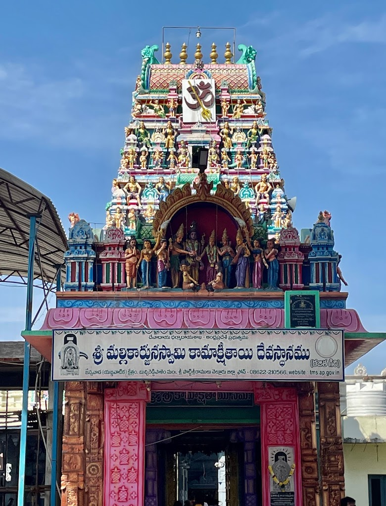

Sri Mallikarjuna Swamy Kamakshi Tayee Temple

Temple Name: Sri Mallikarjuna Swamy Kamakshi Tayee Temple
History: Rooted in rich mythology, the Jonnawada Kamakshi Temple is believed to have been established around the 12th century. The temple showcases Dravidian architecture and has undergone renovations and expansions throughout different dynasties that ruled the region. As an abode of the Mother Goddess, it has been a focal point of Shaktism in South India.
Maps